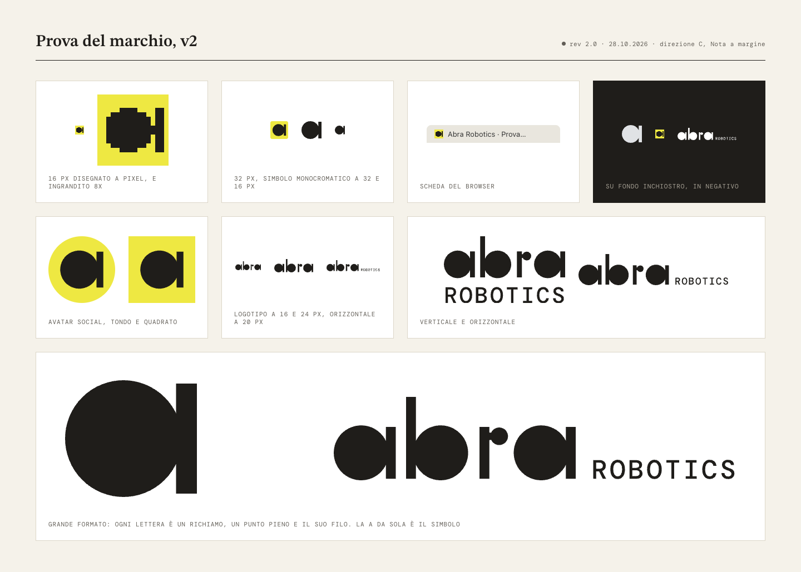
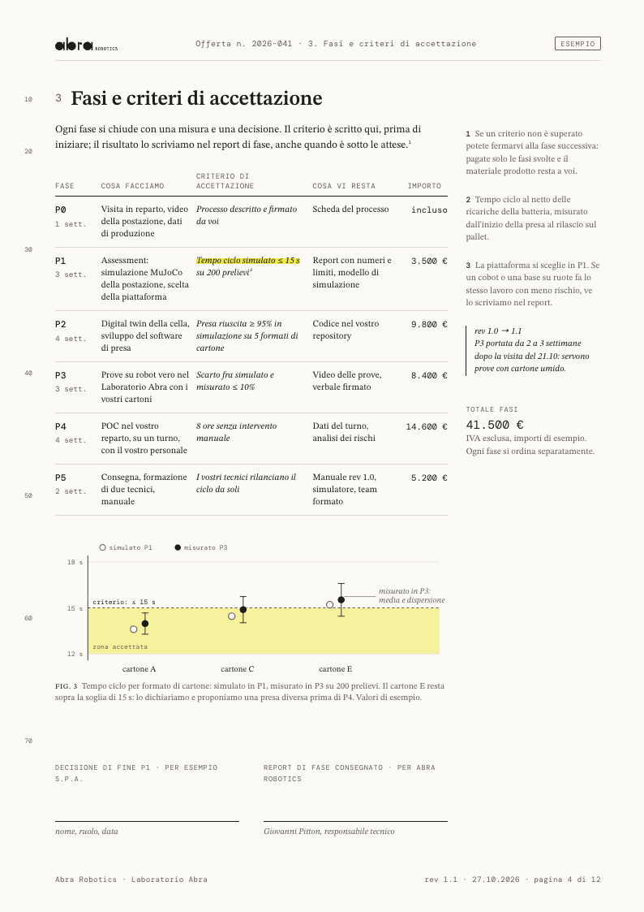
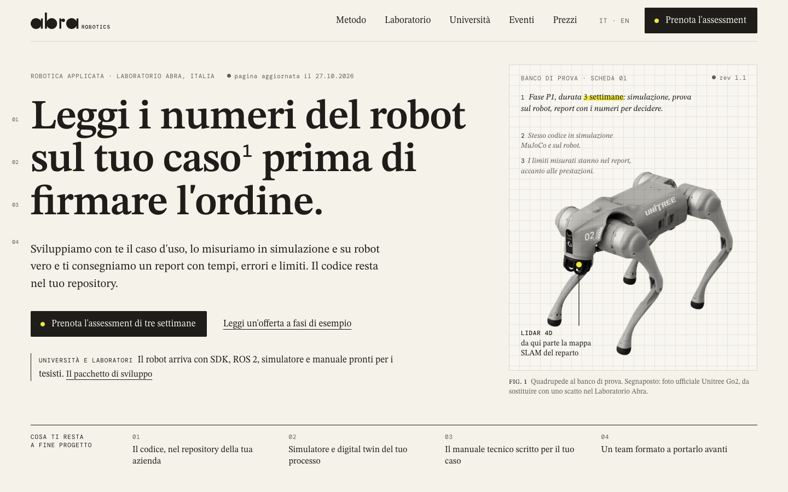
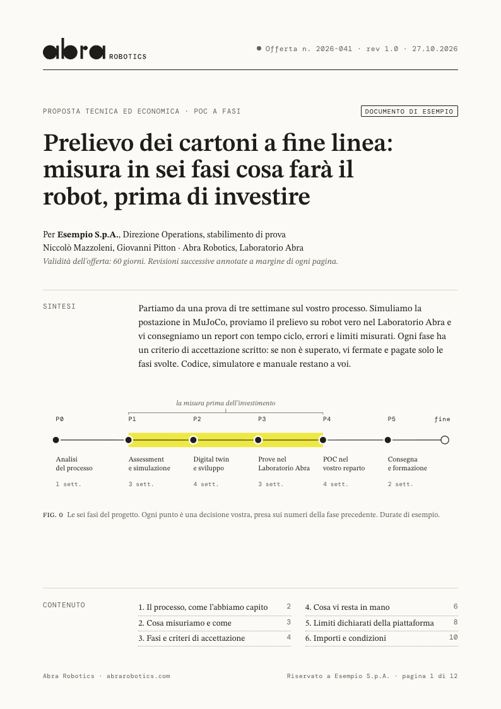
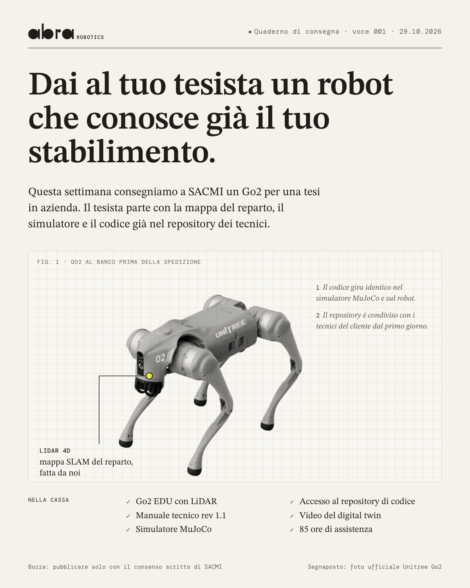
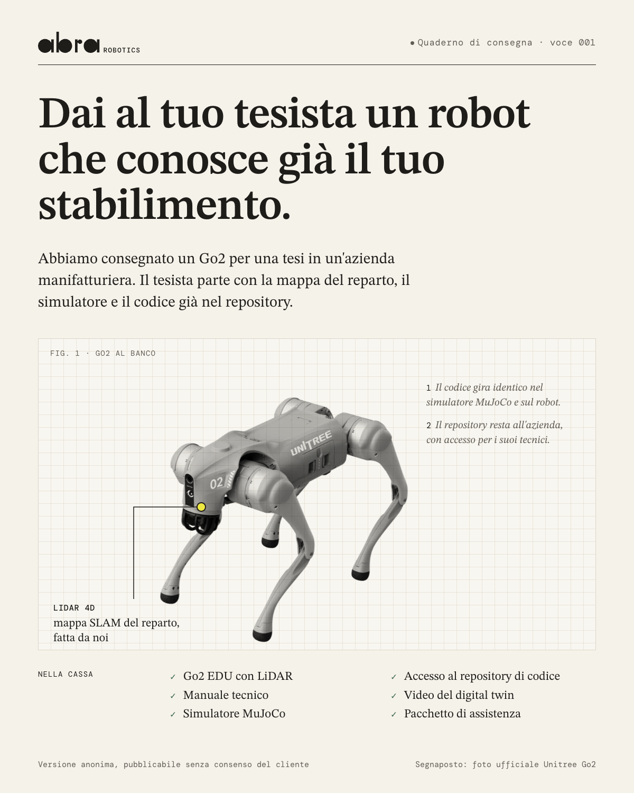
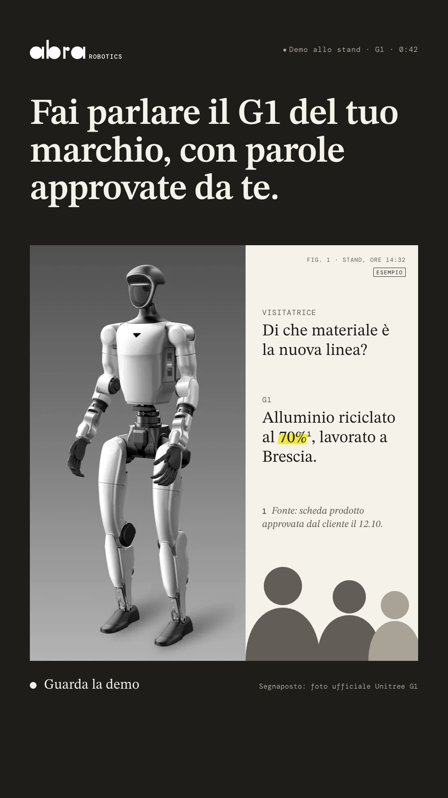
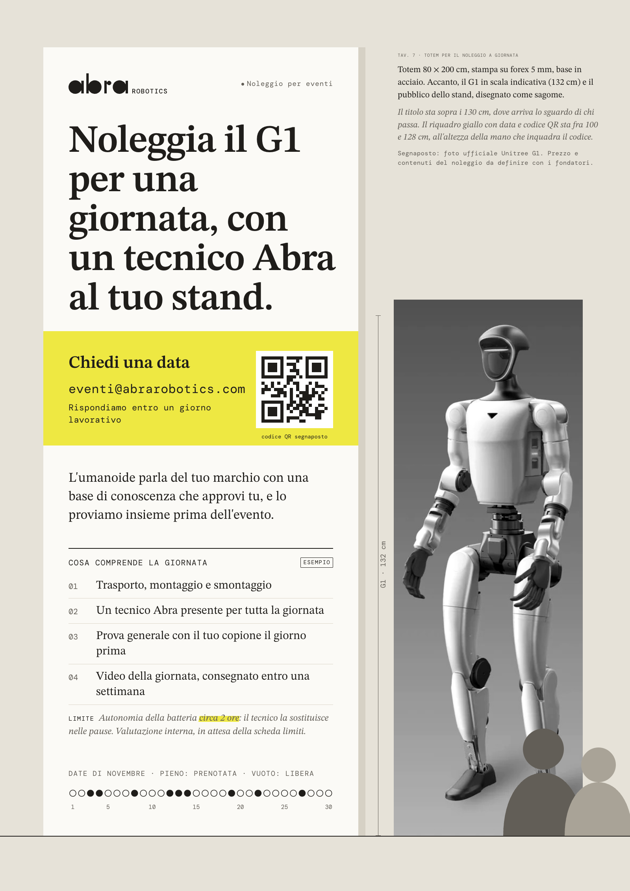
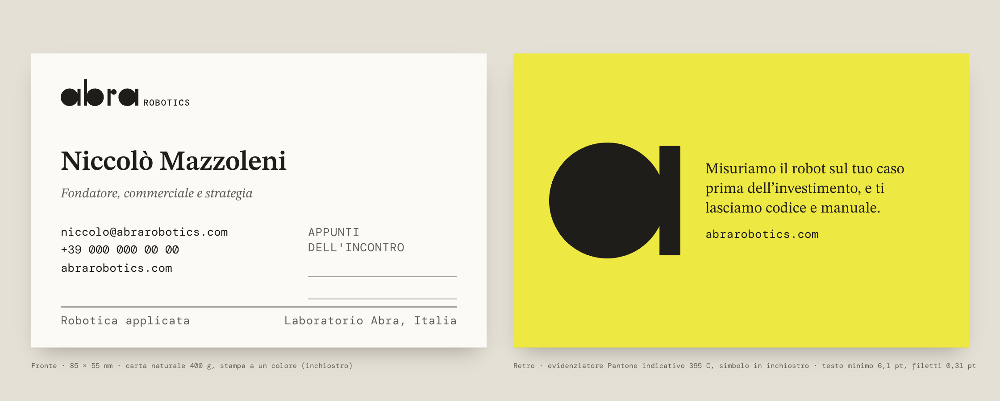
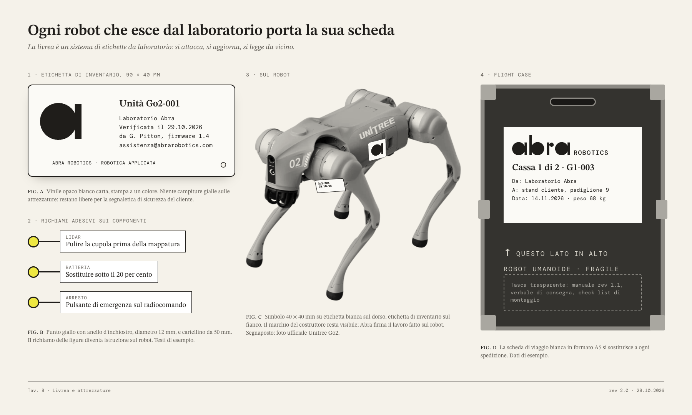

Nota a margine
Abra annota ogni robot come si annota una figura in un articolo scientifico: un punto sulla cosa misurata, un filo, una nota con il numero, il limite e la data.
La promessa di Abra ha una forma grafica: il richiamo.
Chi valuta un robot teme di scoprire troppo tardi cosa farà nel proprio contesto. Abra risponde con numeri misurati, accompagnati da condizioni, limiti e date. Nella letteratura scientifica questo gesto ha un segno preciso: il punto sulla cosa misurata e il filo che porta alla nota.
Abbiamo scritto il nome con quel segno. Ogni lettera di "abra" è un punto pieno con il suo filo: la a e la b sono un punto e un'asta, la r è un'asta con un punto più piccolo. Il nome si legge come un piccolo grafico a punti.
Un logotipo disegnato con due soli elementi.
Cerchi pieni e aste diritte, con la stessa strozzatura dove il punto incontra il filo. "Robotics" accompagna il logotipo in DM Mono maiuscolo, come l'etichetta di una figura. La a da sola è il simbolo: favicon, avatar, adesivo sul robot.

Carta, inchiostro, matita, evidenziatore.
I colori di un tavolo di laboratorio. Il giallo dell'evidenziatore, ora in gamut di stampa (CMYK 8 0 90 0), segna un numero o un criterio misurato e niente altro. Sulle attrezzature il fondo è carta: il giallo resta nel punto.
#F5F2EA
70%
#1F1D1A
20%
#EEE842
3%
#625E57
#A9A397
#DCD6C8
#3E6A4E
1%
Cinque elementi presi dalla pagina di un paper.
Il richiamo indica la cosa e la spiega. La colonna delle note ospita condizioni, limiti e revisioni accanto alle prestazioni. L'evidenziatore segna una misura per pagina. Revisioni, figure e numeri di riga trattano ogni comunicazione come un documento aperto. La carta a quadretti fa da banco di prova sotto i robot.

Icone
Tratto 1,5 px su griglia 24, un solo punto pieno per icona: il punto misurato. Il tratteggio indica il simulato.
Dati
Misurato: punto pieno con barra d'incertezza. Simulato: cerchio vuoto. Criterio: linea tratteggiata. Zona accettata: evidenziatore al 50%. Ogni grafico ha fonte e data nella didascalia.
Motion
Prima la cosa, poi il punto, poi il filo, poi la nota. Logo animato: ogni lettera traccia il suo filo e poi riceve il punto.
Lo stesso quaderno, dal preventivo per un POC al totem in fiera.
Importi, prove e dati di noleggio nei mockup sono di esempio.








Annotata, come un quaderno condiviso con il cliente.
- ManifatturaLeggi i numeri del robot sul tuo caso prima di firmare l'ordine.
- LaboratoriDai al tuo tesista un robot che conosce già il tuo stabilimento.
- TrasversaleLeggi i limiti del robot nella stessa pagina delle prestazioni.
- EventiFai parlare il G1 del tuo marchio, con parole approvate da te.
- EnglishMeasure what the robot will do on your line before you invest.
Una direzione che preferisce la prova allo stupore.
Rinuncia allo spettacolo sugli eventi, che qui si convincono con la chiarezza e con il giallo pieno. Chiede un secondo sguardo, ripagato su LinkedIn e nei documenti e meno efficace nello scorrimento rapido. Funziona davvero solo se Abra produce le note: protocolli di misura, schede limiti, foto proprie del laboratorio.